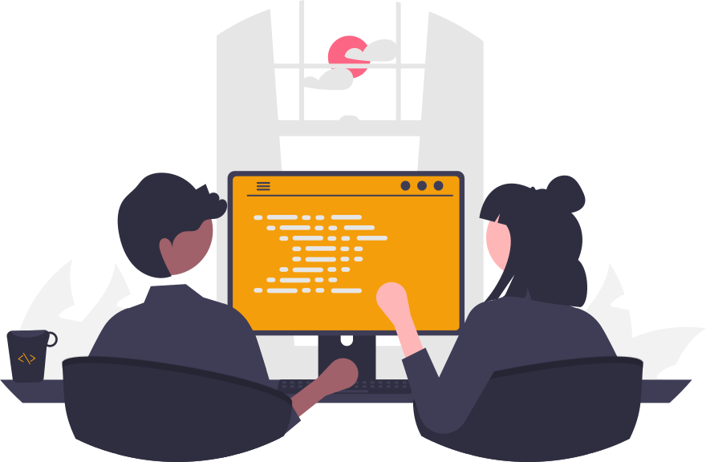

01 — WEB APP
Ekskul teknologi · SMK Texar
TIXAR adalah ruang setelah kelas untuk mencoba coding, desain, dan kerja tim. Tidak perlu datang sudah jago.

Yang dikerjakan di TIXAR
Kami mulai dari dasar, lalu membuat sesuatu yang bisa ditunjukkan. Halaman web, identitas visual, atau alat kecil untuk kebutuhan sekolah.
Arsip karya
Proyek latihan terasa lebih berguna saat punya pengguna dan masalah yang jelas.
01 — WEB APP

02 — PLATFORM

03 — LEARNING

04 — VOTING

05 — EVENT
Cara belajar
Tiap pertemuan punya ruang untuk bertanya, mencoba, lalu menerima masukan dari teman.
HTML, CSS, JavaScript, dan prinsip desain antarmuka.
Pecahkan brief kecil dengan pembagian peran yang nyata.
Presentasikan karya, dapatkan masukan, perbaiki lagi.
Pertanyaan awal
Tidak. Materi dimulai dari fondasi dan anggota belajar dengan ritme yang sama-sama dijaga.
Pemrograman web, desain antarmuka, dan proses mengembangkan produk digital bersama tim.
Rasa ingin tahu. Detail perangkat dan jadwal bisa ditanyakan langsung ke pengurus TIXAR.
Pendaftaran anggota
Temui pengurus TIXAR di sekolah untuk jadwal dan cara pendaftaran.
Kembali ke atas